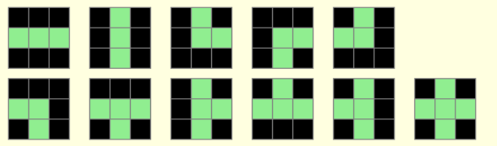
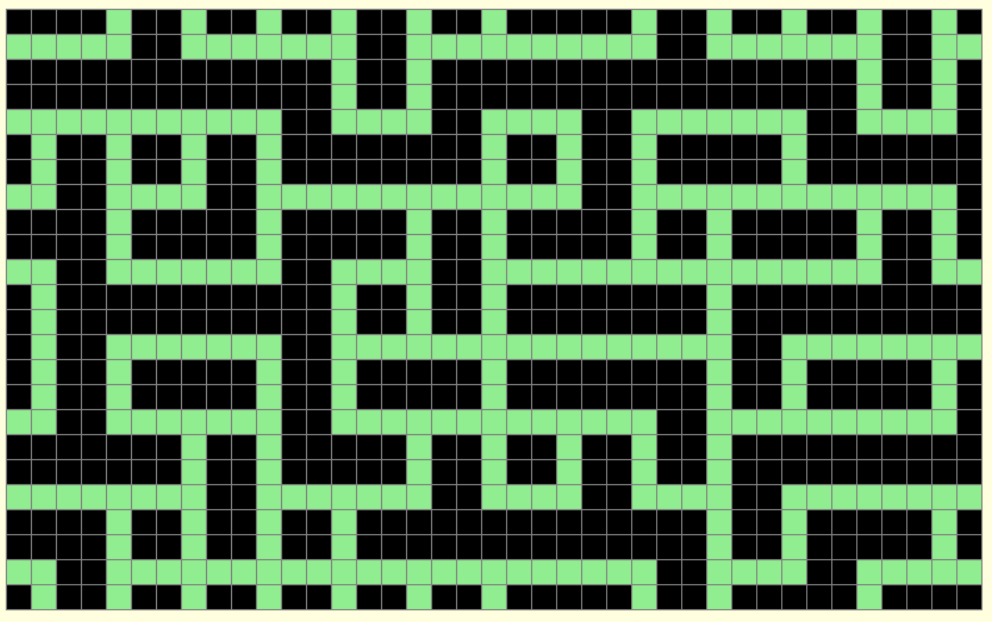

Dynamique des Patterns#
Voici un projet en python aillant pour but de pavé un espace avec des patterns définis et certaines règles d’agencements
Ce projet est inspiré de celui-ci
Voir mon projet sur GitHubDans mon cas j’ai repris la base de la matrice de cellule des projets de Pixel Games. Cela me permet de pouvoir générer des motifs plus facilement. Ces motifs sont formés comme un puzzle avec des tuiles définies à l’avance.

source : personnelleJe définie ensuite où est ce que dans mon tableau les tuiles peuvent être dessiné. La cellule centrale portera les données du motif.
Ensuite pour pouvoir dessiné une nouvelle tuile, j’interroge les voisines directes et choisie au hasard une qui correspond.
Ce programme nous donne une image comme celle-ci :

source : personnelleNous pouvons voir ici la continuité du motif.
Les commandes de l’utilisateur vis à vis du programme sont :
- clic droit : pour placer un motif au hasard
- clic gauche : pour propager le motif à partir de la case choisie
Les cellules bleues représentent les centres des différentes cases ou un motif peut être dessiné.